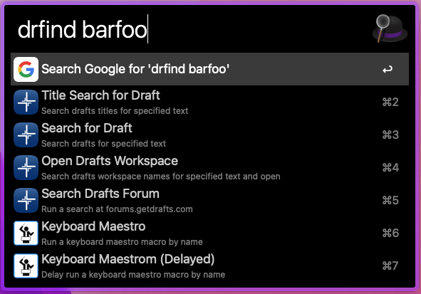
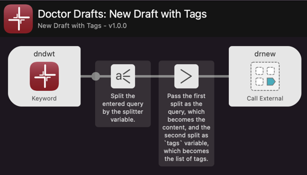

Thank you! I really welcome this fix as needing to remove the trailing space can get tiresome. I appreciate it.
1 Like
Is anybody else having trouble getting the drfind command to work properly?
For me, I can type the command just fine, and Alfred sees it as the “Search for Draft” command, but upon typing my search text and hitting return, the Alfred window just stays there with a blinking cursor and nothing more happens. Hitting return again (and again) does nothing. If I hit tab instead of return, the text turns purple, but still nothing happens.
I’m sure I must be missing something basic. Any suggestions?
It is working fine for me currently. It should be populating a filter list for you to choose a matching draft from. Here is what I get if I search for something that there is a match for.
Here is what I get if I search for something that there is no match for.

What do you get as the output when you run drdiag?

The filter is based on population by a Python script, so if there is an issue, my first guess would be something to do with your Python 3 installation. The diagnostic report should flag up if that’s the issue.
Thanks!
It was indeed a Python issue. I had checked that Python3 was installed, but it was not installed in the right place and/or my PATH hadn’t bee correctly configured. I used the links on your support site to install the latest python with pyenv and it’s working as expected now.
Thanks for the help and for the great tool!
1 Like
I’m glad you’re finding it useful, and that the diagnostic helped - that’s a relatively new addition 
I thought I would have a quick review on how the workflow has grown since public release about 6 months ago:
- There have been seven releases post-beta, and the number of flows in the workflow has increased significantly.
- Triggers now include file actions, universal actions and fallback searches, which greatly increased the usefulness and ways in which it could be used.
- There are well over 100 pages of in-depth documentation on the web site ranging from installation, and the basics, through to extended use - building your own flows on top of this workflow, and the technical documentation to support doing that!
- I still have a few things on the roadmap, and on my private to do list(s)/ideas drafts, but if anyone has any burning desires/great ideas, feel free to post them on this thread and, no promises on delivery, but I will definitely consider including them.
April 2021

The images above and below are the same size, with the grey area representing additional flows. But some of the flows have also been expanded as well with additional functionality.
November 2021

Hi thanks for this wonderful workflow @sylumer
Is there an example of how to use the variables to add a tag to drnew?
Thanks
There’s this one in the use cases.
Thanks @sylumer. I was hoping to be able to add a tag = blah, diblah on the end of the query rather than using variables. But this is a great start until get round to trying to work that out
Using a separator and an external call to drnew makes it relatively straight forward to do.
Here’s a quick example you can use as is or develop further to meet your needs.

- Download Workflow: Doctor Drafts: New Draft with Tags
Summary
This workflow requires the Doctor Drafts workflow -
https://doctordrafts.thoughtasylum.comThe workflow creates a new draft with tags in Drafts. The new draft is not automatically opened; rather it is created in the background.
The workflow uses a variable called
splitter, which is a text string that defines the separation between the new content and the tags. By default this is two vertical pipe characters ("||"), but you can change this to any string you like (e.g. “tags=”).After triggering the workflow using the keyword, enter the text you wish to create a new draft from, followed by the splitter string, and finally by a comma separated list of tags.
Note: The workflow is set to trim whitespace at the start and end of the two splits - the content and the list of tags
Then you can enter a request into Alfred and get a tagged draft as shown below:

Hopefully that’s the sort of thing you were after. Let me know, and if it is, I’ll try and find some time to add it as another use case to the web site. I’m always open to suggestions for more use cases.
@nickwild I had a thought today that gives you another option, a little different to what you first suggested, but perhaps a little easier to use?
If you download the workflow from the same link above, it should now be at version 1.1.0, and include an additional flow.

With this one, open Alfred, type dntd followed by a space and then the content for your new draft. Press return and then you should be presented with the Alfred input dialog window again, this time for tag entry. Enter your comma-separated list of tags, and on pressing return, a new draft will be created.
There is no need to remember a splitter string for using this one, the return key does the splitting, and unless you modified the splitter to be a single character and ignore the (optional) spaces around it, it should be fewer key presses to run through, so fractionally faster. But I think the not having to remember the splitter string is what swings it for me - if yoiu are not using it all the time, it would be easy to forget.
Hope that helps.
1 Like
Thank you so much for sharing these workflows! Both your website and blog are valuable resources of information and knowledge.
1 Like
Version 1.6.0 of Doctor Drafts is now available. It includes some revisions around Alfred actions for some new config that’s available (and was I believe inspired by some of the hoops I jumped through regarding Doctor Drafts’ original implementation for actions), but the big update is around the availability of Drafts actions search within some of the flows; hopefully the ones where it makes most sense to include them as an option.
When you create a new draft using drnew for example, if you then hold down ⌘ as you press return, you will then be able to filter and choose from a list of all available actions, and then once the draft is created, the draft will be loaded and the action run against it.
For example, here’s the search when I filter my list of actions for “journal”.

The action group an action belongs to is shown underneath.
This should help with disambiguation, but I would strongly recommend unique names for actions as when the resulting action name is passed on to Drafts, it is only the name (via the URL scheme) and not the group, and so Drafts cannot tell which you wish to use if there are multiple matches.
Similarly, searching by content or title and pressing ⇧⌘ will give the same option (⌘ on its own was already taken for these as a way to copy the content of the draft).
This action search functionality was something that I wanted to incorporate into Doctor Drafts since the very first beta of the workflow, but it took me a while to figure out one final piece of the puzzle. but, now it’s done, and hopefully it will work well for everyone, but as always, please do flag up any issues that you come across.
A use case for adding a new draft with any tag(s) has also been added to the website. This is effectively a walkthrough of the example above.
1 Like
Wanted to flag that the Doctor Drafts documentation suggests two different ways of installing Python3. And one of them at least doesn’t seem to be working for me. The install page on the web site links to a 2021 page recommending the official python.org installer, and specifically recommends against using homebrew. The diagnostic page that comes up when you run drdiag within Alfred links to an older post that describes using homebrew (and pyenv) and specifically recommends against using the python.org installer. I admit I am well out of my depth here, but these suggestions seem to be in contradiction with one another.
For my part, I used the python.org installer as recommended on the Doctor Draft web site install page, and while I can access Python3 from the terminal and run a print command to test it, Doctor Drafts commands still aren’t working for me, and drdiag tells me it can’t find Python3. Still troubleshooting that.
Thanks for flagging the inconsistency, I’ll take a look at aligning them.
The unfortunate truth of Python set up is often visualised by the excellent XKCD illustration.
{kind=link}
I have installed/uninstalled/reinstalled Python a handful of times in different ways. I got them all working by hook or by crook … eventually 
The one I have personally had the most success with is the Homebrew and Pyenv approach.
What I might take a go at is putting together a set of instructions based on that to go on the site and then link off to other resources should people have any issues on their system.
1 Like
The python.org installer did eventually work for me - there was a problem with my Xcode command line installation, apparently, because when I reinstalled that, drdiag found python3 and now the full suite of dr commands is functional.
1 Like
v1.7.0 is now available. This includes a new way of triggering the Python-script-driven functionality. I’m hoping it will prove to be more resilient and allow for even easier set-up as a result.
There are new Python 3 installation instructions on the website (linked to if you have Python 3 issues found by drdiag. This is now run automatically if there is an issue running a Python script - giving what is in effect both useful and actionable information about an error.
There is also a new quick access checker (drpyver) for checking the version of Python that Doctor Drafts will attempt to use to run Python scripts. Mainly for my use in developing this change and testing various configurations that switched around my Python version.
I didn’t get any feedback on beta testing of this, so I’m going a little blind on something that has a lot of what ifs and caveats associated with it. I guess we’ll see how close I got as people start to pick up the update and use it.
1 Like
v1.8.0 is now available.
It includes a fix as notified by @Richard_Cool, as well as a few additions to the diagnostics and a new option to copy a workspace’s URL to the clipboard.
I have also deprecated the Drafts beta related flows as Drafts beta testing on macOS is now managed via Testflight. Launching these will now take you to the beta programme page.
2 Likes